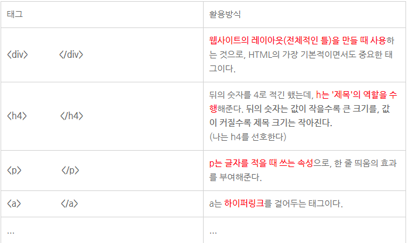
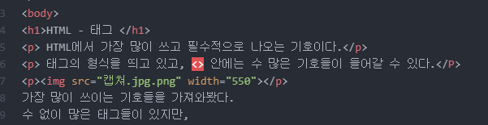

HTML에서 가장 많이 쓰고 필수적으로 나오는 기호이다.
태그의 형식을 띄고 있고, <> 안에는 수 많은 기호들이 들어갈 수 있다.

가장 많이 쓰이는 기호들을 가져와봤다. 수 없이 많은 태그들이 있지만,다 외울 필요도 없고 외우기도 힘드니 구글과 함께하는 것을 추천 !
끌어올 이미지가 파일과 같은 폴더에 있다고 가정할 때
<.img src="이미지파일 이름.jpg>이런식으로 넣어주면 이미지가 뜨게 된다
사용 가능한 파일의 형식은jpg, gif, png
관련 속성으로는
1) width, height 속성
- width와 height 속성은 이미지 파일의 가로세로 사이즈를 정하는 속성이다보통 <.img src="이미지파일 이름" width="가로값" height="세로값">
이렇게 사용한다 ex): 2) title 속성
title 속성은 이미지 위에 커서를 올렸을 때 설정한 텍스트가 뜨게 하는 설정이다보통 <.img src="이미지파일 이름" title="텍스트">
이렇게 사용한다하이퍼링크 태그는 <.a><./a>를 사용한다.
태그는 <.a href="문서 주소">표시텍스트 를 사용한다.관련 속성으로는
1) blank, self, parent 속성하이퍼링크를 클릭하였을 때, 새 탭에서 추가하는지 아니면 원래 탭에서 넘어가는지 등을 설정하는 속성이다.
보통 필자는 _blank 속성을 사용